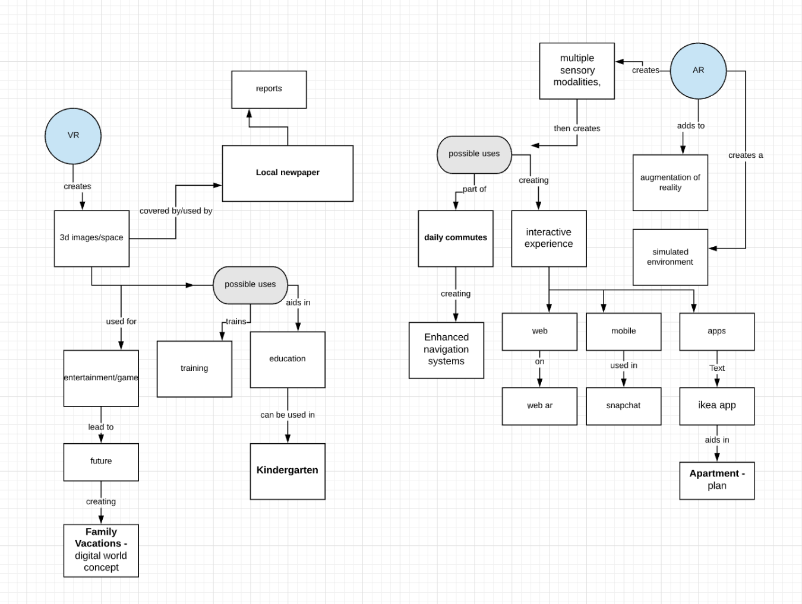
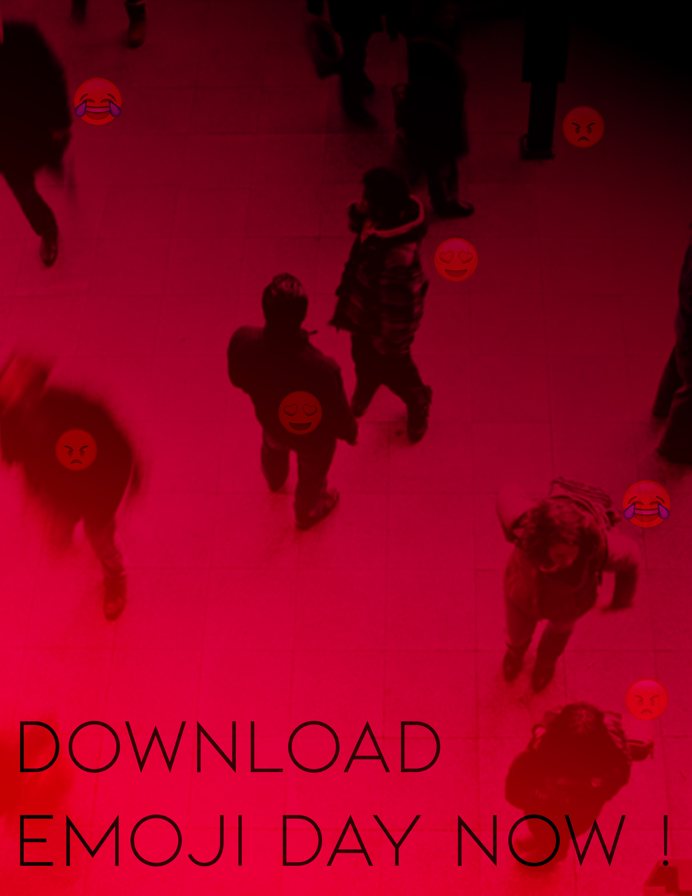
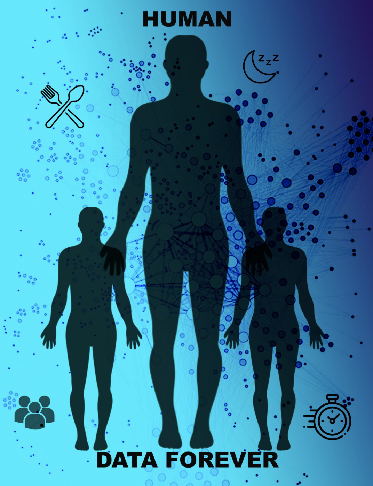

Initial Research
Augmented reality alters one's ongoing perception of a real-world environment, whereas virtual reality completely replaces the user's real-world environment with a simulated one.2D STUDY
My 2D study focuses on the topic of Augmented Reality. It focuses on the future use of this technology in our everyday lives and how our dystopian reality will look like. I explore the ideas that in the future everyone will use AR glasses to see live streams and updates of information. This was inspired by the hyper reality video by Matsuda. This questions and shows how AR in the future will look.
3D STUDY
For my 3D study, I created an image of the future, where I predict that people will wear glasses or contacts with augmented reality abilities every day. They will see data and messages as well as be able to update emoji's that reflect their emotions. There will also be a chip inserted into people that will track their data for their mood and how it changes based on various inputs. This will send messages to their live status updates to share their moods with the world. This will help spark conversation and connect or repel people. There is also a way to block the updates from going live, for example, if someone is at an interview, date or place where they would like to hide the updates. They can turn off the mood reader and it is also possible to share with the public or only with friends. Although sharing with strangers can help connect with others and spark conversations and connections. In a party setting It will be a visual reduced to minimal size, since clubs or parties tend to be visually stimulating, we don't want to overwhelm the environment. Users can also customize the size or how many they want to appear, yet the public environments they enter may have functions to mute the update based on events and spaces.
I imagine this to be a downloadable app so it is popular and has a place for the data to be stored efficiently. The name is EMOJI Days. These are customizable images and statuses, there will be a million emojis to choose from in the future. The data of these statuses allow app owners and users to see their fluctuating emotions and the common thread of feeling, which can link and monitor mental health aspects. It's also interesting to think of how this can improve safety and can spread alerts. The AR tech can be used to signal to others if you are being attacked, or feel unsafe, and could help people draw attention to themselves in dangerous situations.